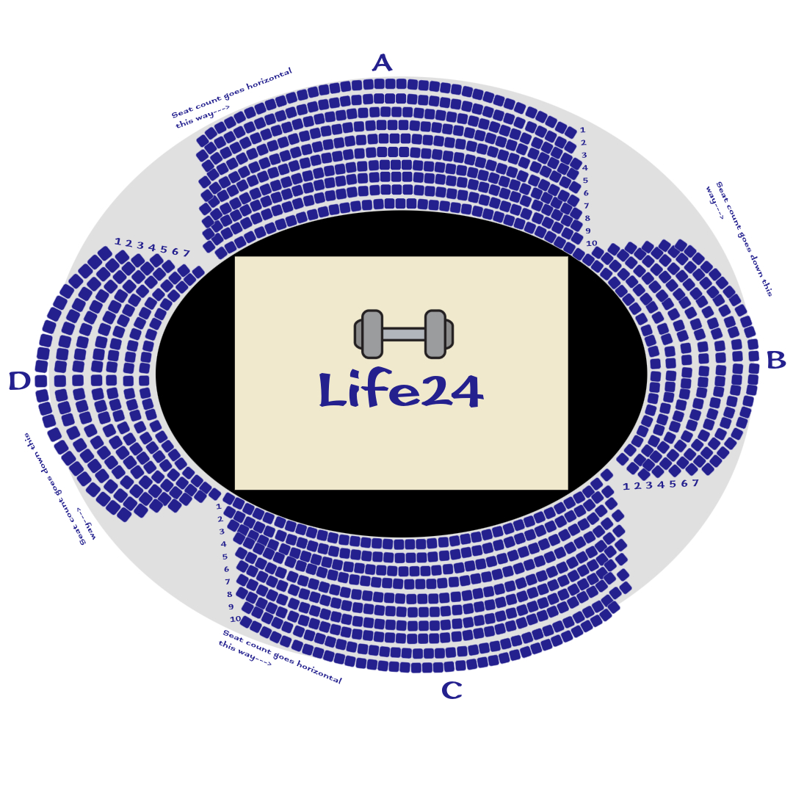

DirectionsOur Location: |
|
|  |
Seating ArrangementWe are proud to say that we have 3,500 seats in total around our arena. It is split into 4 groups, with ten rows for groups A and C, and with 7 rows for groups B and D The format for stating your specific seat is explained at every booking form but here it is again: To choose your seat, first pick the side of the gymnasium you want to sit in: A, B, C, or D. Then, you need to pick the row that you'll sit in. The row count starts from the top to the bottom. Separate these characters with a dot. Finally, pick the specific seat in the row based on the direction indicated. For instance, if the direction is to the right, the side is A, and you want to sit in the last row on the last seat, your desired seat will look like this: A.1.36 Our booking forms contain he seats that are available at the current moment of time, ensuring that your information is accurate. |
Guidelines and Policies
Main community regulations and policies: Users who don't follow our guidelines and policies could have their account suspended for a month or may be asked to exit the event without a refund depending on the circumstances of the situation |
|
 |
AmenitiesOur gymnasium contains elements that stand out from other gymnasium. Many of our features include a large 70,000 sq. feet of stage area, perfect for large events like trade shows to reduce a feeling of crowdness. Along with that, there are 3,500 seats outside the arena, which is enough for a large audience to indulge in performances with perfect amount of space. For sports, our gymnasium has built in basketball hoops that can go down when needed. For parties, our gymnasium has a disco ball inside the cieling. When needed, the disco ball can come down with a click of a button. We provide free wi-fi access, comfortable seating, and clean bathrooms: The seats contain arm rests and foam padding for comfort, and the bathrooms are cleaned every 3 hours by our team of helpful janitors working around the clock. We have sufficient parking space for vehicles and we also include handicapped-accessible parking along with separate parking for VIPs and hosts. Along with sufficient parking, we also have concession stands and a box office beside the entrance of our gymnasium. Attendees of events can book tickets and choose seating online or they can go to the box office before hand and book a ticket in-person. Concession stands offer beverages and food that people can buy whenever they desire, preferably before an event has started. |